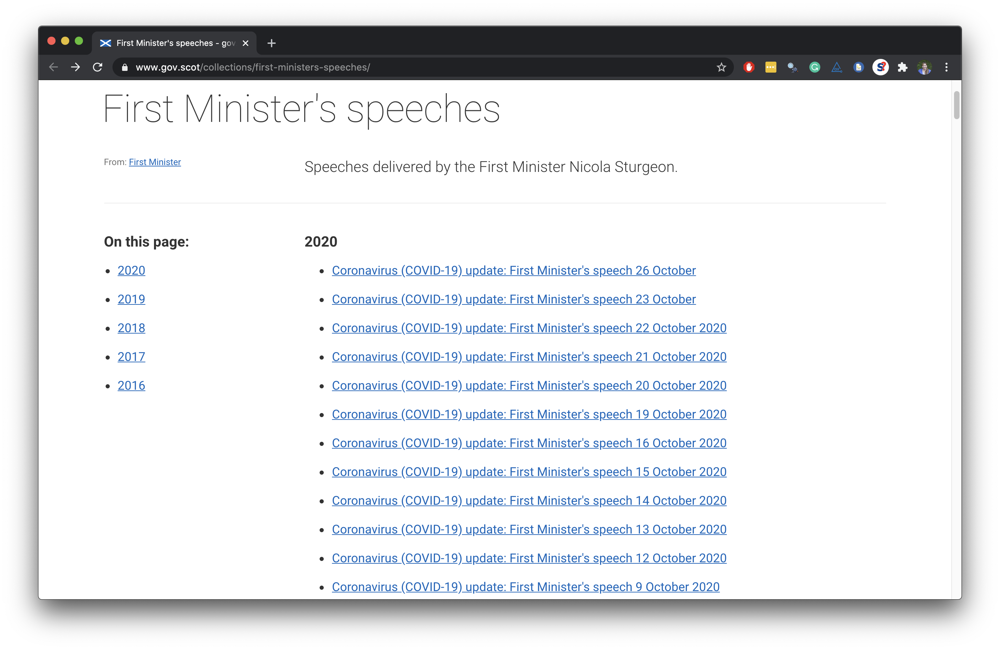

Functions
Data Science in a Box
layout: true
class: middle
First Minister’s COVID speeches
üèÅ Start with

End with üõë
# A tibble: 218 x 6
title date locat~1 abstr~2 text url
<chr> <date> <chr> <chr> <chr> <chr>
1 Coronavirus (COVID-19)~ 2021-04-20 St And~ Statem~ "Goo~ http~
2 Coronavirus (COVID-19)~ 2021-04-13 St And~ Statem~ "Tha~ http~
3 Coronavirus (COVID-19)~ 2021-04-06 St And~ Statem~ "Goo~ http~
4 Coronavirus (COVID-19)~ 2021-03-30 St And~ Statem~ "Tha~ http~
5 Coronavirus (COVID-19)~ 2021-03-24 Scotti~ Statem~ "Tha~ http~
6 Coronavirus (Covid-19)~ 2021-03-23 The Sc~ Statem~ "Pre~ http~
7 Coronavirus (COVID-19)~ 2021-03-18 Scotti~ Statem~ "Tha~ http~
8 Coronavirus (COVID-19)~ 2021-03-17 St And~ Statem~ "\nG~ http~
9 Coronavirus (COVID-19)~ 2021-03-16 Scotti~ Statem~ "Pre~ http~
10 Coronavirus (COVID-19)~ 2021-03-15 St And~ Statem~ "\nG~ http~
11 Coronavirus (COVID-19)~ 2021-03-11 Scotti~ Statem~ "I c~ http~
12 Coronavirus (COVID-19)~ 2021-03-09 Scotti~ Statem~ "Pre~ http~
13 Coronavirus (COVID-19)~ 2021-03-05 Scotti~ Parlia~ "Hel~ http~
14 Coronavirus (COVID-19)~ 2021-03-04 Scotti~ Parlia~ "I w~ http~
15 Coronavirus (COVID-19)~ 2021-03-02 Scotti~ Statem~ "Pre~ http~
# ... with 203 more rows, and abbreviated variable names
# 1: location, 2: abstract.center[]


Plan
Scrape
title,date,location,abstract, andtextfrom a few COVID-19 speech pages to develop the codeWrite a function that scrapes
title,date,location,abstract, andtextfrom COVID-19 speech pagesScrape the
urls of COVID-19 speeches from the main pageUse this function to scrape from each individual COVID-19 speech from these
urls and create a data frame with the columnstitle,date,location,abstract,text, andurl
class: middle
Scrape data from a few COVID-19 speech pages
Read page for 26 Oct speech
url <- "https://www.gov.scot/publications/coronavirus-covid-19-update-first-ministers-speech-26-october/"
speech_page <- read_html(url).pull-left[] .pull-right[]
Extract title
.pull-left-wide[
] .pull-right-narrow[]
Extract date
.pull-left-wide[] .pull-right-narrow[]
Extract location
.pull-left-wide[] .pull-right-narrow[]
Extract abstract
.pull-left-wide[] .pull-right-narrow[]
Extract text
.pull-left-wide[] .pull-right-narrow[]
Put it all in a data frame
.pull-left[] .pull-right[]
Read page for 23 Oct speech
url <- "https://www.gov.scot/publications/coronavirus-covid-19-update-first-ministers-speech-23-october/"
speech_page <- read_html(url)speech_page{html_document}
<html dir="ltr" lang="en">
[1] <head>\n<meta http-equiv="Content-Type" content="text/html ...
[2] <body class="fontawesome site-header__container">\r\n\r\n\ ...Extract components of 23 Oct speech
title <- speech_page %>%
html_node(".article-header__title") %>%
html_text()
date <- speech_page %>%
html_node(".content-data__list:nth-child(1) strong") %>%
html_text() %>%
dmy()
location <- speech_page %>%
html_node(".content-data__list+ .content-data__list strong") %>%
html_text()
abstract <- speech_page %>%
html_node(".leader--first-para p") %>%
html_text()
text <- speech_page %>%
html_nodes("#preamble p") %>%
html_text() %>%
list()Put it all in a data frame
.pull-left[] .pull-right[]
class: middle
.larger[ .light-blue[ .hand[ this is getting tiring…]]]
class: middle
Functions
When should you write a function?
| .pull-left[] |
|---|
| .pull-right[ When you’ve copied and pasted a block of code more than twice.] |
.question[ How many times will we need to copy and paste the code we developed to scrape data on all of First Minister’s COVID-19 speeches?]
Why functions?
- Automate common tasks in a more powerful and general way than copy-and-pasting:
- Give your function an evocative name that makes your code easier to understand
- As requirements change, only need to update code in one place, instead of many
- Eliminate chance of making incidental mistakes when you copy and paste (i.e. updating a variable name in one place, but not in another)
–
- Down the line: Improve your reach as a data scientist by writing functions (and packages!) that others use
.question[ Assuming that the page structure is the same for each speech page, how many “things” do you need to know for each speech page to scrape the data we want from it? ]
.pull-left-wide[ .xsmall[]]
Turn your code into a function
- Pick a short but informative name, preferably a verb.
scrape_speech <- Turn your code into a function
- Pick a short but evocative name, preferably a verb.
- List inputs, or arguments, to the function inside
function. If we had more the call would look likefunction(x, y, z).
scrape_speech <- function(x){
} Turn your code into a function
- Pick a short but informative name, preferably a verb.
- List inputs, or arguments, to the function inside
function. If we had more the call would look likefunction(x, y, z). - Place the code you have developed in body of the function, a
{block that immediately followsfunction(...).
scrape_speech <- function(url){
# code we developed earlier to scrape info
# on single art piece goes here
}scrape_speech()
.pull-left-wide[ .small[]]
Function in action
scrape_speech(url = "https://www.gov.scot/publications/coronavirus-covid-19-update-first-ministers-speech-26-october/") %>%
glimpse()Rows: 1
Columns: 6
$ title <chr> NA
$ date <date> NA
$ location <chr> NA
$ abstract <chr> NA
$ text <list> <"\nGood afternoon, and thanks for joining us.~
$ url <chr> "https://www.gov.scot/publications/coronaviru~Function in action
scrape_speech(url = "https://www.gov.scot/publications/coronavirus-covid-19-update-first-ministers-speech-23-october/") %>%
glimpse()Rows: 1
Columns: 6
$ title <chr> NA
$ date <date> NA
$ location <chr> NA
$ abstract <chr> NA
$ text <list> <"\nGood afternoon everyone. Thank you very mu~
$ url <chr> "https://www.gov.scot/publications/coronaviru~Function in action
scrape_speech(url = "https://www.gov.scot/publications/coronavirus-covid-19-update-first-ministers-speech-22-october/") %>%
glimpse()Rows: 1
Columns: 6
$ title <chr> NA
$ date <date> NA
$ location <chr> NA
$ abstract <chr> NA
$ text <list> <"\nGood afternoon, let me start as usual with~
$ url <chr> "https://www.gov.scot/publications/coronaviru~class: middle
Writing functions
What goes in / what comes out?
.pull-left-wide[ - They take input(s) defined in the function definition]
.question[ What is going on here?]
add_2 <- function(x){
x + 2
1000
}add_2(3)[1] 1000add_2(10)[1] 1000Naming functions
“There are only two hard things in Computer Science: cache invalidation and naming things.” - Phil Karlton
Naming functions
- Names should be short but clearly evoke what the function does
| - Names should be verbs, not nouns |
|---|
- Multi-word names should be separated by underscores (snake_case as opposed to camelCase) |
- A family of functions should be named similarly (
scrape_page(),scrape_speech()ORstr_remove(),str_replace()etc.)
– - Avoid overwriting existing (especially widely used) functions
# JUST DON'T
mean <- function(x){
x * 3
}